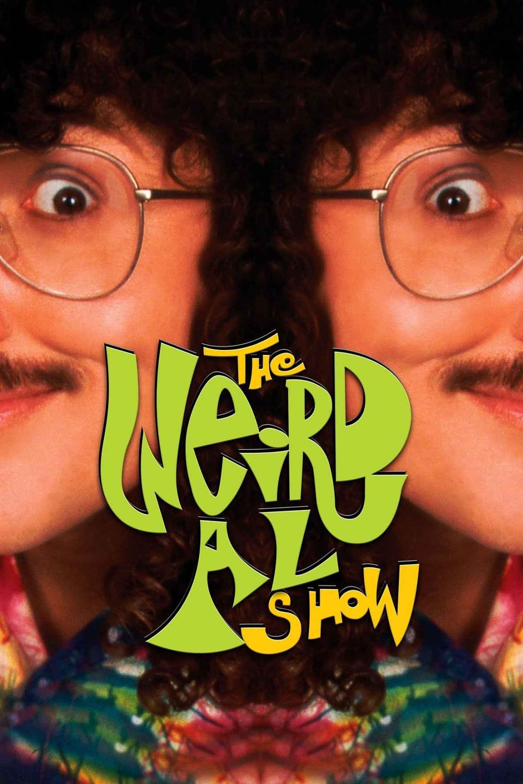

"The Weird Al Show Theme" é a música-tema do programa de televisão The Weird Al Show, apresentado por "Weird Al" Yankovic. A canção foi lançada em 1999 no álbum Running with Scissors e conta, de maneira humorística e acelerada, a história de como Al teria ido morar em uma árvore e acabado ganhando seu próprio programa de televisão.
A letra faz diversas referências à biografia fictícia apresentada no livro The Compleat Al, incluindo a história de que Al teria trabalhado em uma fábrica de descongestionantes nasais. Também é mencionada a participação em um time de boliche da empresa, que pode ser uma referência à música "Generic Blues". Dessa forma, a canção mistura elementos da vida fictícia criada para o personagem de Al com acontecimentos relacionados ao próprio programa de televisão.
O videoclipe e a abertura do programa também se destacam pela variedade de estilos de animação utilizados. As cenas combinam animação tradicional, animação computadorizada em 3D e claymation, criando uma sequência visual bastante diferente de uma abertura televisiva convencional.
A parte em claymation foi produzida por Mark Osborne e Scott Nordlund, que anteriormente haviam trabalhado no videoclipe de "Jurassic Park", enquanto a animação em CGI ficou por conta da DNA Productions. A animação tradicional foi produzida pela Jireh Animation, com a arte final e a pintura realizadas pela Epoch Ink.
Com sua letra cheia de referências à mitologia fictícia criada em torno de "Weird Al" e uma abertura visual que mistura diferentes técnicas de animação, "The Weird Al Show Theme" funciona como uma introdução divertida e caótica ao universo do programa, além de ser uma das faixas mais curiosas presentes em Running with Scissors.
Oh, this is a story 'bout a guy named Al
And he lived in a sewer with his hamster pal
But the sanitation workers really didn't approve
So he packed up his accordion and had to move
To a city in Ohio where he lived in a tree
And he worked in a nasal decongestant factory
And he played on the company bowling team
And every single night he had a strange recurring dream
Where he was wearing lederhosen in a vat of sour cream
But that's really not important to the story
Well, the very next year he met a dental hygienist
With a spatula tattooed on her arm (on her arm)
But he didn't keep in touch
And he lost her number
Then he got himself a job on a tator-tot farm
And he spent his life-savings on a split-level cave
Twenty miles below the surface of the Earth (of the Earth)
And he really makes a mighty fine jelly bean and pickle sandwich
For what it's worth
Then one day Al was in the forest trying to get a tan
When he heard the tortured screaming of a funny little man
He was caught in a bear trap and Al set him free
And the guy that he rescued was grateful as could be
And it turns out he's a big-shot producer on TV
So he gives Al a contract and what do ya know
Now he's got his very own Weird Al show
(It’s the the Weird Al Show)
(Talkin bout the Weird Al Show)
(Scatting)
(Hey, hey)
(Hey, hey)
(Hey, hey)
(Hey, hey)
Hey!
Yeah, yeah
Yeah, yeah
Yeah, yeah